FADS-based Picoinjector Characterization
fads_picoinjector_characterization.Rmd
library(picoinjector)
library(dplyr)
#>
#> Attaching package: 'dplyr'
#> The following objects are masked from 'package:stats':
#>
#> filter, lag
#> The following objects are masked from 'package:base':
#>
#> intersect, setdiff, setequal, union
library(ggplot2)
library(wesanderson)Picoinjecting black ink and recording videos at 4000 fps
Black ink was injected into ~ 30 µm droplets and videos were recorded using a high-speed camera. The footage was processed using ImageJ and MATLAB in order to detect droplets and determine their size. The sizes of recognized droplets were stored in text files.
Read the data:
files <- list.files("data/fads/221216/ink/", pattern = "_kymograph_droplets.txt$", full.names = TRUE)
droplets <- tibble::tibble()
for (f in files) {
droplets <- droplets %>%
dplyr::bind_rows(
readr::read_table(f, show_col_types = FALSE) %>%
dplyr::mutate("file" = stringr::str_extract(basename(f), "\\d{8}_\\d{6}")) %>%
# normalize intensity by droplet width
dplyr::mutate("intensity" = intensity/width)
)
}
# add metadata
droplets <- droplets %>%
dplyr::left_join(
readr::read_table("data/fads/221216/ink/metadata.txt", show_col_types = FALSE),
by = "file"
)Now, plot the measured droplet sizes and check if they make sense:
droplets %>%
filter(ac_field == TRUE) %>%
mutate("q_emulsion" = as.factor(q_emulsion),
"p_oil" = as.factor(p_oil),
"p_water" = as.factor(p_water)) %>%
ggplot(aes(x = width)) +
geom_histogram(aes(fill = p_water), alpha = 0.3, position = "identity") +
facet_grid(p_oil ~ q_emulsion, labeller = label_both, scales = "free") +
theme_pretty_thesis()
#> `stat_bin()` using `bins = 30`. Pick better value with `binwidth`.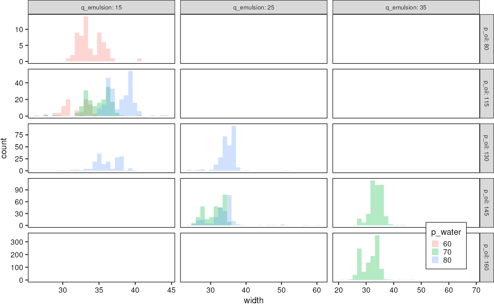
Single-file level
Summarize the droplet populations for every file:
dropletSummary <- droplets %>%
dplyr::group_by(file, p_oil, q_emulsion, p_water, ac_field) %>%
dplyr::summarise("mean_diameter" = mean(width),
"median_diameter" = median(width),
"sd_diameter" = sd(width),
"intensity_mean" = mean(intensity),
"intensity_median" = median(intensity),
"intensity_sd" = sd(intensity),
"n_droplets" = dplyr::n())
#> `summarise()` has grouped output by 'file', 'p_oil', 'q_emulsion', 'p_water'.
#> You can override using the `.groups` argument.
dropletSummary
#> # A tibble: 14 × 12
#> # Groups: file, p_oil, q_emulsion, p_water [14]
#> file p_oil q_emu…¹ p_water ac_fi…² mean_…³ media…⁴ sd_di…⁵ inten…⁶ inten…⁷
#> <chr> <dbl> <dbl> <dbl> <lgl> <dbl> <dbl> <dbl> <dbl> <dbl>
#> 1 202212… 260 35 131 FALSE 31.2 30 5.27 327. 331.
#> 2 202212… 80 15 60 TRUE 33.8 33.5 1.73 128. 129.
#> 3 202212… 115 15 60 TRUE 32.0 32.2 2.12 131. 136.
#> 4 202212… 115 15 70 TRUE 34.8 34.8 1.76 126. 129.
#> 5 202212… 115 15 80 TRUE 37.8 37.8 1.70 114. 115.
#> 6 202212… 130 15 80 TRUE 36.0 36.1 1.80 106. 107.
#> 7 202212… 130 25 80 TRUE 34.7 35.2 2.43 130. 130.
#> 8 202212… 145 25 80 TRUE 33.3 33.5 3.71 160. 154.
#> 9 202212… 145 25 70 TRUE 31.0 31.7 2.72 197. 187.
#> 10 202212… 145 25 70 TRUE 32.1 31.7 5.06 246. 234.
#> 11 202212… 145 35 70 TRUE 33.8 33.9 2.84 135. 134.
#> 12 202212… 160 35 70 TRUE 32.6 33.5 3.00 145. 137.
#> 13 202212… 160 35 70 TRUE 31.5 32.2 3.12 134. 126.
#> 14 202212… 160 35 70 TRUE 30.9 30.9 3.71 139. 135.
#> # … with 2 more variables: intensity_sd <dbl>, n_droplets <int>, and
#> # abbreviated variable names ¹q_emulsion, ²ac_field, ³mean_diameter,
#> # ⁴median_diameter, ⁵sd_diameter, ⁶intensity_mean, ⁷intensity_medianThe median diameter of uninjected droplets is 30 µm.
Since pressure and flow rate are related linearly in the Hagen-Poisseuille model, I will summarize the two variables into a single ratio p_oil/q_emulsion I somehow want to express the droplet velocity in terms of p_oil and q_emulsion. For q_emulsion it would be straightforward, but the spacing oil is driven by pressure, which makes the flow rate harder to estimate. I will just use the Hagen-Poisseuille law with a hydraulic resistance value from literature to convert pressure into flow rate, and then add it to the emulsion flow rate.
\[R_h =\frac{12 \eta L}{1-0.63(h/w)} \frac{1}{h^3w}\]
For the dynamic viscosity I use that of FC-40 fluorinert oil which according to this source is 4.1 mPa s. For the channel dimensions I use L = 0.5 mm, h = 30 µm, w = 20 µm (approximate length of the most confined channel segment)
r_h <- 12 * 4.1e-3 * 0.5e-3 /((1-0.63*(30e-6 / 20e-6))*(30e-6)^3 * 20e-6)
dropletSummary <- dropletSummary %>%
dplyr::mutate("q_oil_est" = p_oil * 1e2/r_h * 3.6e12) # in ml/hIdea: emulsion flow rate negligible compared to spacing oil flow rate, which is usually at least five times larger. Therefore, express p_oil and p_injection as a ratio:
get_volume_change <- function(diameter1, diameter0) {
return(1/6 * pi * (diameter1^3 - diameter0^3))
}
pal <- wes_palette("Zissou1", 100, type = "continuous")
dropletSummary %>%
filter(ac_field == TRUE) %>%
mutate("water_oil_ratio" = p_water/p_oil,
"injected_volume" = sapply(median_diameter * 1e-6, get_volume_change, 30e-6) * 1e15) %>%
ggplot(aes(x = water_oil_ratio, y = injected_volume)) +
scale_fill_gradientn(colours = pal) +
geom_smooth(method = "lm", formula = y~x, linetype = "dashed", color = "black", linewidth = 0.5, se = FALSE) +
# geom_hline(yintercept = 30, linetype = "dashed") +
geom_point(aes(fill = q_emulsion), shape = 21, size = 4) +
theme_pretty_thesis() +
labs(x = expression(p["injection"]/p["oil"]),
y = "Injected volume [pL]",
fill = "Emulsion flow rate [µl/h]",
title = "Picoinjected volumes are largest at low throughput and relatively high injection pressure") +
ylim(c(0,15)) +
guides(fill = guide_legend(title.position = "top", direction = "horizontal"))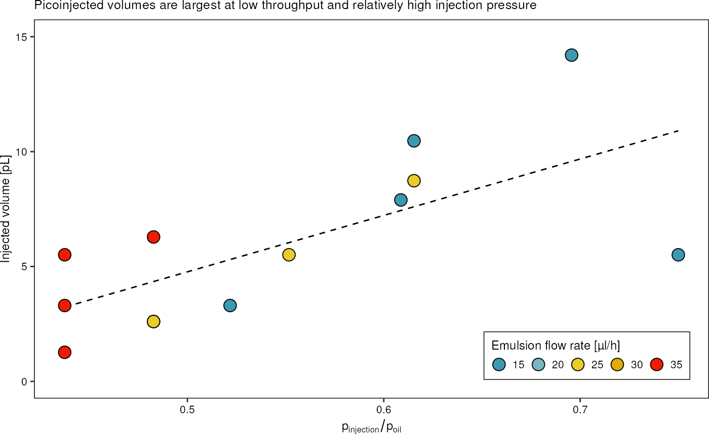
Lets investigate the grey intensities.
dropletSummary %>%
filter(ac_field == TRUE) %>%
mutate("water_oil_ratio" = p_water/p_oil,
"injected_volume" = sapply(median_diameter * 1e-6, get_volume_change, 30e-6) * 1e15) %>%
ggplot(aes(x = injected_volume, y = intensity_median)) +
geom_smooth(method = "lm", formula = y~x, linetype = "dashed", color = "black", linewidth = 0.5, se = FALSE) +
# geom_hline(yintercept = 30, linetype = "dashed") +
geom_point(aes(fill = water_oil_ratio), shape = 21, size = 4) +
# scale_fill_viridis_c() +
scale_fill_gradientn(colours = pal) +
theme_pretty_thesis() +
labs(x = "Injected volume [pL]",
y = "Median droplet gray value",
title = "Pixel intensity decreases when picoinjecting ink",
fill = expression(p["injection"]/p["oil"])) +
theme(legend.position = c(1,1),
legend.justification = c(1,1))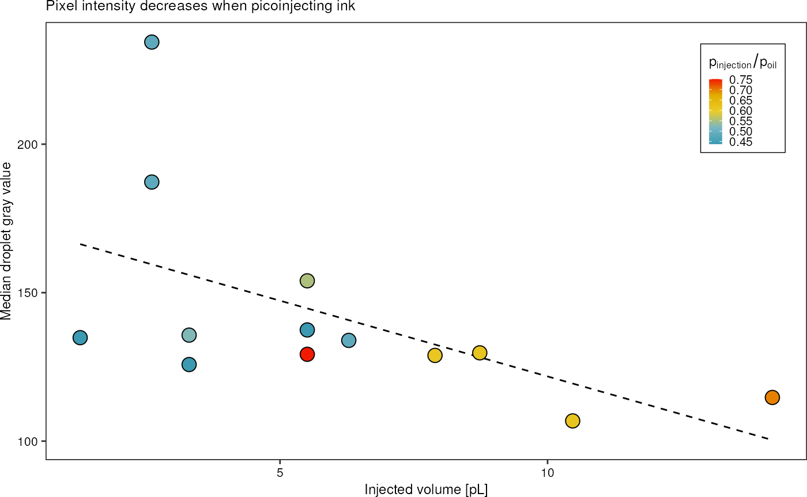
# guides(fill =
# guide_legend(title.position = "top", direction= "horizontal", ))Information I can take from this plot:
- with larger injection volume, more ink is injected, the pixel intensity decreases
- high variability
# library(ggridges)
#
# droplets %>%
# group_by(file) %>%
# filter(width > quantile(width, 0.1) & width < quantile(width, 0.9)) %>% # remove outliers
# ungroup() %>%
# ggplot(aes(x = width, y = file)) +
# scale_fill_gradientn(colours = pal) +
# geom_vline(xintercept = 30) +
# geom_density_ridges(aes(fill = p_water/p_oil)) +
# theme_pretty_thesis() + facet_wrap(~factor(q_emulsion), ncol = 1)Picoinjecting Atto488 into resorufin droplets (2023-01-26)
In order to characterize the picoinjector operating range, 30 µm resorufin droplets were injected with Att488 dye. Fluorescence activities of the droplets were measured during operation using the FADS-setup. Waveform files corresponding to the signals arriving at the two PMT tubes were recorded and analyzed using MATLAB code, and TSV files containing information of the droplets identified in the signal were generated. These will be analysed in this vignette.
Single-droplet level
Load the TSV data. Each row corresponds to a droplet. Droplet
populations resulting from 34 different parameter combinations were
collected. I exclude file Signal_29 because picoinjection
didn’t work well for those parameters.
greenAll <- fads_read_all("data/fads/230126/", "_barcode.txt$") %>%
dplyr::filter(file != "Signal_29")
redAll <- fads_read_all("data/fads/230126/", "_injected.txt$") %>%
dplyr::filter(file != "Signal_29")
greenAll
#> # A tibble: 2,651,225 × 11
#> t_start t_max t_end voltage width spacing area injec…¹ id occup…²
#> <dbl> <dbl> <dbl> <dbl> <dbl> <dbl> <dbl> <dbl> <dbl> <dbl>
#> 1 0.00288 0.00361 0.00422 0.00600 0.00133 0.00314 5.82e-6 0 1 0
#> 2 0.00736 0.00816 0.00926 0.0108 0.0019 0.00218 1.22e-5 1 2 1
#> 3 0.0114 0.0122 0.0128 0.00634 0.00133 0.00192 6.21e-6 0 3 0
#> 4 0.0147 0.0154 0.0160 0.00652 0.00132 0.00140 6.23e-6 0 4 0
#> 5 0.0174 0.0182 0.0187 0.00701 0.00127 0.00164 6.25e-6 1 5 1
#> 6 0.0203 0.0210 0.0216 0.00674 0.00130 0.0014 6.27e-6 1 6 1
#> 7 0.0230 0.0238 0.0244 0.00680 0.00132 0.00194 6.48e-6 1 7 1
#> 8 0.0263 0.0270 0.0276 0.00662 0.00128 0.00140 6.09e-6 1 8 1
#> 9 0.0290 0.0297 0.0302 0.00704 0.00123 0.00203 6.21e-6 1 9 1
#> 10 0.0322 0.0329 0.0335 0.00631 0.00128 0.00154 5.68e-6 1 10 1
#> # … with 2,651,215 more rows, 1 more variable: file <chr>, and abbreviated
#> # variable names ¹injected, ²occupancyThe information for which times the AC field was on/off, as well as pressures and flow rates are stored in a metadata text file:
metadata <- readr::read_table("data/fads/230126/metadata.txt", show_col_types = FALSE)
metadata
#> # A tibble: 34 × 9
#> file q_oil p_water q_emulsion ac_v_pp ac_frequency t_off video laser…¹
#> <chr> <dbl> <dbl> <dbl> <dbl> <dbl> <dbl> <chr> <dbl>
#> 1 Signal_0 150 125 25 5 50 103. 2023012… 1
#> 2 Signal_1 150 115 25 5 50 95.3 2023012… 1
#> 3 Signal_2 150 105 25 5 50 85.9 2023012… 1
#> 4 Signal_3 150 95 25 5 50 112. 2023012… 1
#> 5 Signal_4 150 85 25 5 50 99.4 2023012… 1
#> 6 Signal_5 150 130 25 5 50 91.9 2023012… 2
#> 7 Signal_6 150 140 25 5 50 65.2 2023012… 2
#> 8 Signal_7 300 120 50 5 50 42.4 2023012… 2
#> 9 Signal_8 300 130 50 5 50 51.2 2023012… 2
#> 10 Signal_9 300 140 50 5 50 27.3 2023012… 2
#> # … with 24 more rows, and abbreviated variable name ¹laser_focusConvert the generator signal voltage to the amplified peak-to-peak
voltage applied to the electrodes. For that I use the linear regression
fit calculated in vignette("electrical_engineering").
metadata <- metadata %>%
dplyr::mutate("ac_v_pp" = ac_v_pp * 52.08425) %>%
# also remove the 'video' column
dplyr::select(-video)Using the information on flow rates as well as the channel dimensions, I can furthermore estimate the droplet velocity at which the droplets pass the injection junction by simply dividing the total flow rate (i.e. emulsion + spacing oil) by the known microchannel cross section. To account for the different units I use 1 µl = 1e9 µm³.
metadata <- metadata %>%
dplyr::mutate("velocity" = ((q_emulsion+q_oil) * 1e9/3600)/(20*30)*1e-6) # m/sNow I want to join the metadata to the signal data.
grn <- greenAll %>%
left_join(metadata, by = "file") %>%
dplyr::mutate("ac_field" = case_when(t_max < t_off ~ TRUE,
.default = FALSE))
red <- redAll %>%
left_join(metadata, by = "file") %>%
dplyr::mutate("ac_field" = case_when(t_max < t_off ~ TRUE,
.default = FALSE))Furthermore, by knowing the droplet velocity, I can go transform the signal width, which is a period of time, into an actual spatial width in units of length. To that end, I have to multiply the peak width by the droplet velocity to get the spatial length of the droplet.
grn <- grn %>%
dplyr::mutate("width_um" = width * velocity * 1e6)
red <- red %>%
dplyr::mutate("width_um" = width * velocity * 1e6)
grn %>%
dplyr::select(file, q_emulsion, q_oil, p_water, ac_field, width , width_um)
#> # A tibble: 2,651,225 × 7
#> file q_emulsion q_oil p_water ac_field width width_um
#> <chr> <dbl> <dbl> <dbl> <lgl> <dbl> <dbl>
#> 1 Signal_0 25 150 125 TRUE 0.00133 108.
#> 2 Signal_0 25 150 125 TRUE 0.0019 154.
#> 3 Signal_0 25 150 125 TRUE 0.00133 108.
#> 4 Signal_0 25 150 125 TRUE 0.00132 107.
#> 5 Signal_0 25 150 125 TRUE 0.00127 103.
#> 6 Signal_0 25 150 125 TRUE 0.00130 105.
#> 7 Signal_0 25 150 125 TRUE 0.00132 107.
#> 8 Signal_0 25 150 125 TRUE 0.00128 103.
#> 9 Signal_0 25 150 125 TRUE 0.00123 99.7
#> 10 Signal_0 25 150 125 TRUE 0.00128 104.
#> # … with 2,651,215 more rowsObviously, these numbers are too large to represent droplet diameters. One must account for the fact that droplets are still squeezed in the microchannel, and appear therefore much longer.
We can convert the measured squeezed squeezed length into an equivalent spherical droplet diameter: In the confined picoinjection junction, 30µm droplets are squeezed into an elongated shape that can be approximated by an elliptical cylinder with half-ellipsoids on each end. The volume of an ellipsoid with semi-axes \(a, b, c\) is \[V_e = \frac{4}{3} \pi a b c.\]
The volume of an elliptical cylinder with semi-axes \(a, b\) and length \(L\) computes as \[V_c = \pi a b L.\]
The droplet volume can than be approximated by \(V_d = V_e + V_c\): \[V_d = V_e + V_c = \frac{4}{3} \pi a b c + \pi a b L.\] Lets say \(c\) is the ellipsoid radius along the axis in direction of the channel, \(a\) the radius in the lateral direction (i.e. half of the channel width), and \(b\) the radius in z-direction (i.e. half of the channel height). The signal measured by the PMT then corresponds to the full length of the droplet \(L+2c\).
Assuming \(c = \frac{1}{2}(a+b)\) and rearranging for \(V_d\) yields: \[V_d = \pi a b \left( \frac{2}{3} (a+b) + L \right).\]
The radius of the droplet in a perfectly spherical shape can then be found as \[r = \left(\frac{3}{4} \frac{V_d}{\pi}\right)^{1/3}.\]
squeezed_length_to_diameter <- function(signalWidth, channelWidth, channelHeight) {
# if the droplet is not squeezed, l is already the diamteer of a spheere
a <- channelWidth/2
b <- channelHeight/2
if (signalWidth < a+b) {
return(signalWidth)
}
# else...
# get volume of the corresponding half sphere-cylinder
vSphere = pi * a * b * (2/3*(a+b) + signalWidth-a-b)
# return diameter of a same-volume sphere
return(2*(3/4 * vSphere/pi)^(1/3))
}
# inverse function...
diameter_to_squeezed_length <- function(diameter, channelWidth, channelHeight) {
# if the droplet is not squeezed, l is already the diameter of a spheere
a <- channelWidth/2
b <- channelHeight/2
if (diameter < a+b) {
return(diameter)
}
# else...
# get volume of the corresponding half sphere-cylinder
vsphere = 4/3 * pi *(diameter/2)^3
signalWidth <- vsphere/(pi*a*b) + 1/3 * (a+b)
return(signalWidth)
}
tibble::tibble("signal" = seq(10,100)) %>%
dplyr::mutate("diameter" = sapply(signal, squeezed_length_to_diameter, 20, 30)) %>%
ggplot(aes(x = signal, y = diameter)) +
geom_line() +
theme_pretty() +
labs(title = "Droplet diameter as function of PMT signal spatial width. For unsqueezed droplets, the signal is equal to the diameter.",
x = "PMT signal width converted into [µm]",
y = "Corresponding sphere diameter [µm]")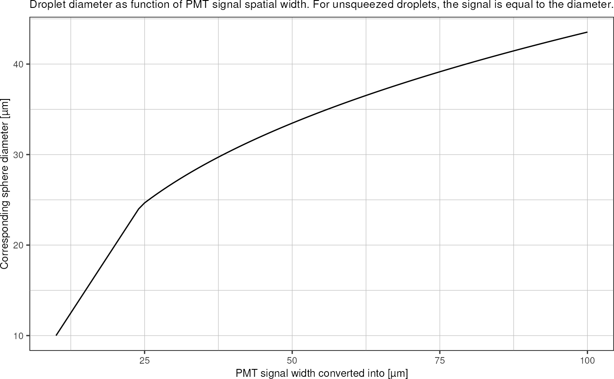
tibble::tibble("diameter" = seq(10,45)) %>%
dplyr::mutate("length" = sapply(diameter, diameter_to_squeezed_length, 20, 30)) %>%
ggplot(aes(x = length, y = diameter)) +
geom_line() +
theme_pretty() +
labs(title = "Droplet diameter as function of PMT signal spatial width. For unsqueezed droplets, the signal is equal to the diameter.",
x = "PMT signal width converted into [µm]",
y = "Corresponding sphere diameter [µm]")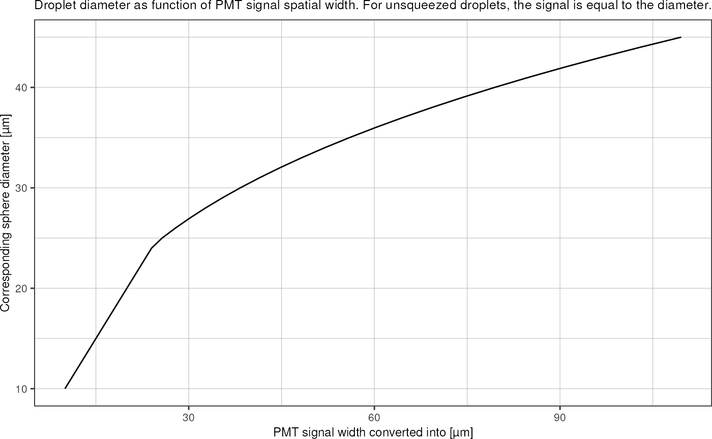
These calculated widths/diameters represent a flow rate normalization,
therefore, the uninjected (i.e. field OFF) droplet populations should
now all have the same width_um value, regardless of the
flow rate. That is, if no measurement artifacts become important when
scaling up the flow rates.
grn %>%
filter(ac_field == FALSE) %>%
group_by(file, ac_field) %>%
summarise(median_width = median(width_um)) %>%
mutate("corresponding_sphere_diameter" = sapply(median_width, squeezed_length_to_diameter, 20, 30)) %>%
arrange(median_width)
#> `summarise()` has grouped output by 'file'. You can override using the
#> `.groups` argument.
#> # A tibble: 33 × 4
#> # Groups: file [33]
#> file ac_field median_width corresponding_sphere_diameter
#> <chr> <lgl> <dbl> <dbl>
#> 1 Signal_4 FALSE 55.1 34.8
#> 2 Signal_3 FALSE 60.4 36.0
#> 3 Signal_2 FALSE 62.8 36.6
#> 4 Signal_1 FALSE 65.6 37.2
#> 5 Signal_0 FALSE 67.2 37.6
#> 6 Signal_24 FALSE 68.3 37.8
#> 7 Signal_6 FALSE 70.1 38.2
#> 8 Signal_26 FALSE 70.5 38.3
#> 9 Signal_21 FALSE 70.6 38.3
#> 10 Signal_20 FALSE 71.8 38.5
#> # … with 23 more rowsInteresting: After recording signals 0-4, I had to re-adjust the
laser focus due to chip movement. These recordings seem to cluster apart
from the other measurements. Also: This measurement approach becomes
inaccurate as the peak widths approach the resolution limit (see
Signal33).
Reasons for droplets appearing larger then actual when mesured like this:
- laser spot is not an ideal point but has spatial extent, therefore the PMTs receive a signal also, when the droplet is only partially there
- peak widths are measured from the beginning of the rising edge until the end of the falling edge
(file, electric field state)-level
Summarize by groups:
grnSummary <- grn %>%
dplyr::group_by(file, ac_field) %>%
dplyr::summarise("width_mean" = mean(width),
"width_sd" = sd(width),
"width_median" = median(width),
"voltage_mean" = mean(voltage),
"voltage_sd" = sd(voltage),
"voltage_median" = median(voltage),
"area_mean" = mean(area),
"area_sd" = sd(area),
"area_median" = median(area),
"spacing_mean" = mean(spacing),
"spacing_sd" = sd(spacing),
"spacing_median" = median(spacing),
"frequency" = dplyr::n() / (max(t_max) - min(t_max)),
"injected" = mean(injected),
"n_droplets" = dplyr::n(),
.groups = "drop") %>%
dplyr::left_join(metadata, by = "file") %>%
dplyr::mutate("velocity" = ((q_emulsion+q_oil) * 1e9/3600)/(20*30)*1e-6) # m/s
redSummary <- red %>%
dplyr::group_by(file, ac_field) %>%
dplyr::summarise("width_mean" = mean(width),
"width_sd" = sd(width),
"width_median" = median(width),
"voltage_mean" = mean(voltage),
"voltage_sd" = sd(voltage),
"voltage_median" = median(voltage),
"area_mean" = mean(area),
"area_sd" = sd(area),
"area_median" = median(area),
"spacing_mean" = mean(spacing),
"spacing_sd" = sd(spacing),
"spacing_median" = median(spacing),
"frequency" = dplyr::n() / (max(t_max) - min(t_max)),
"is_false_droplet" = mean(is_false_drop),
"n_droplets" = dplyr::n(),
.groups = "drop") %>%
dplyr::left_join(metadata, by = "file") %>%
dplyr::mutate("velocity" = ((q_emulsion+q_oil) * 1e9/3600)/(20*30)*1e-6) # m/sPlot droplet frequency (as derived from the number of droplets detected in the signal) vs. emulsion flow rate.
grnSummary %>%
ggplot(aes(q_emulsion, y = frequency)) +
geom_smooth(method = "lm", formula = y~x) +
geom_point(shape = 1) +
theme_pretty_thesis()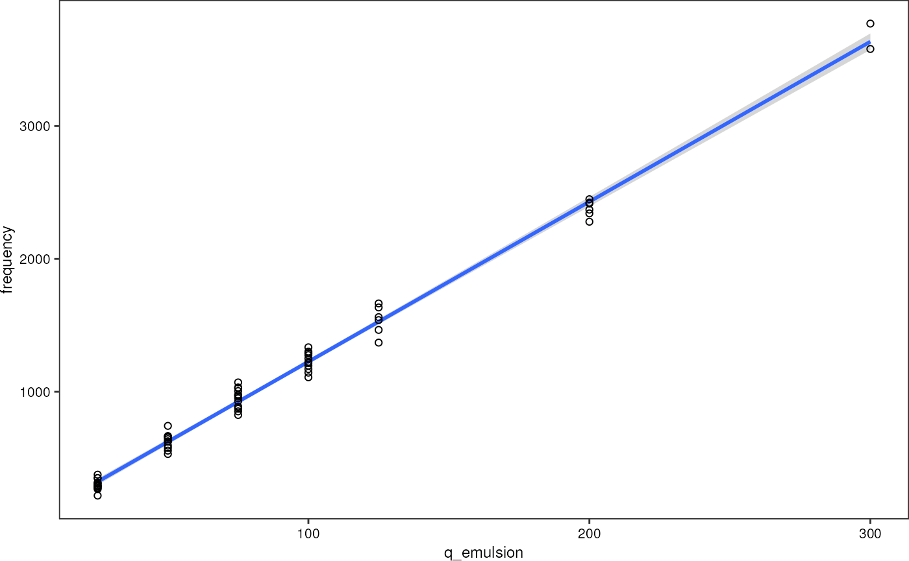
As expected, it can be seen that the droplet frequency depends linearly on the emulsion flow rate. Therefore, I can use it as a second axis when plotting against emulsion flow rate.
# get linear regression
m <- lm(frequency ~ q_emulsion, grnSummary)
m
#>
#> Call:
#> lm(formula = frequency ~ q_emulsion, data = grnSummary)
#>
#> Coefficients:
#> (Intercept) q_emulsion
#> 21.72 12.05I find: frequency [Hz] = q_emulsion [µl/h] * 12.05 + 21.72. I neglect the offset.
grnSummary %>%
dplyr::mutate("width_um" = width_mean * velocity * 1e6) %>%
dplyr::select(file, q_emulsion, q_oil, p_water, ac_field, width_mean, width_um) %>%
dplyr::mutate("width_um" = sapply(width_um, squeezed_length_to_diameter, 20, 30))
#> # A tibble: 66 × 7
#> file q_emulsion q_oil p_water ac_field width_mean width_um
#> <chr> <dbl> <dbl> <dbl> <lgl> <dbl> <dbl>
#> 1 Signal_0 25 150 125 FALSE 0.000839 37.7
#> 2 Signal_0 25 150 125 TRUE 0.00120 43.1
#> 3 Signal_1 25 150 115 FALSE 0.000830 37.6
#> 4 Signal_1 25 150 115 TRUE 0.00112 42.0
#> 5 Signal_10 50 300 150 FALSE 0.000483 39.8
#> 6 Signal_10 50 300 150 TRUE 0.000612 43.4
#> 7 Signal_11 50 300 160 FALSE 0.000484 39.8
#> 8 Signal_11 50 300 160 TRUE 0.000601 43.1
#> 9 Signal_12 50 300 170 FALSE 0.000472 39.4
#> 10 Signal_12 50 300 170 TRUE 0.000607 43.3
#> # … with 56 more rowsNext, I can determine the mean or median droplet diameter in the non-injected populations (i.e. AC field off) and use it to measure the volume increase, i.e. the injected volume. I do this on the droplet population level, and not for individual droplets.
Plot Q_emulsion (~droplet frequency) vs. p_injection
- relate peak width to droplet dimensions by measuring droplet sizes in high-speed video of uninjected droplets.
Percentage of false droplets
redSummary %>%
ggplot(aes(x = is_false_droplet)) +
geom_histogram(aes(fill = ac_field), alpha = 0.5, position = "identity", bins = 30) +
theme_pretty_thesis() +
labs(x = "Percentage of false droplets",
y = "Count", fill = "Electric field on") +
theme(legend.position = c(1,1), legend.justification = c(1,1))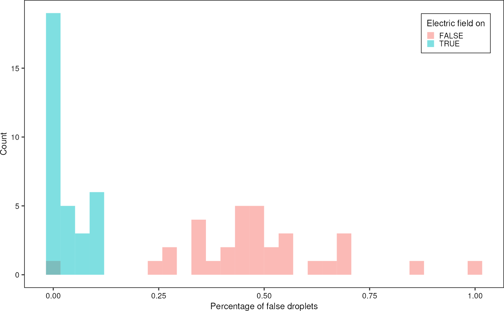
Percentage of injected droplets:
grnSummary %>%
ggplot(aes(x = injected)) +
geom_histogram(aes(fill = ac_field), alpha = 0.5, position = "identity", bins = 30) +
theme_pretty_thesis() +
labs(x = "Percentage of injected droplets",
y = "Count", fill = "Electric field on") +
theme(legend.position = c(1,1), legend.justification = c(1,1))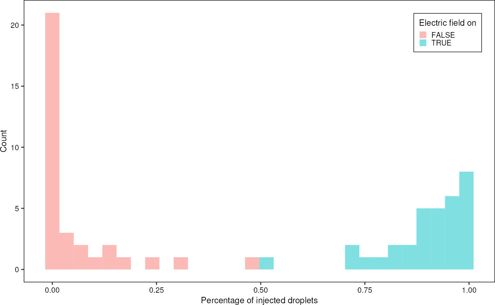
grnSummary %>%
# filter(q_emulsion != 300) %>%
ggplot(aes(x = velocity, y = p_water, color = injected, shape = ac_field)) +
geom_point(size = 2, position = position_dodge2(width = 0.01)) +
scale_colour_viridis_c() +
# scale_color_gradientn(colours = pal) +
theme_pretty_thesis() 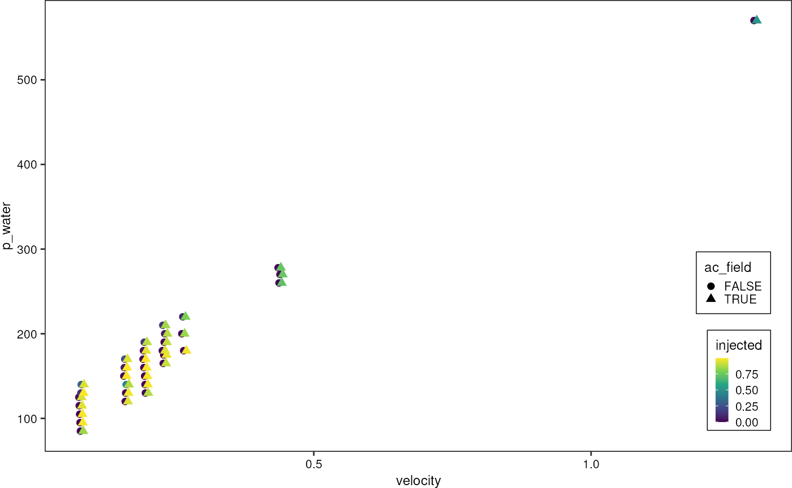
Single-file level
Consolidate electric field and channel into single rows:
- false_drops = percentage of false drops when field is on
- false_injections = percentage of injected drops when field is off
- leakage = percentage of false drops when field is off
- delta_width = median width field on minus field off
# extract the base information from grnSummary
drops <- grnSummary %>%
dplyr::filter(ac_field == TRUE) %>%
dplyr::select(c(file, q_oil, q_emulsion, p_water, velocity, frequency, ac_v_pp, ac_frequency)) %>%
dplyr::left_join(
# get information about INJECTED droplets, i.e. channel == green and injected > 0 (and probably field == off for most cases)
grn %>%
dplyr::filter(injected == 1) %>%
dplyr::group_by(file) %>%
dplyr::summarise("width_green_injected" = median(width),
"voltage_green_injected" = median(voltage),
"area_green_injected" = median(area),
.groups = "drop"),
by = "file") %>%
dplyr::left_join(
# get information about NON-injected droplets
grn %>%
dplyr::filter(injected == 0) %>%
dplyr::group_by(file) %>%
dplyr::summarise("width_green_noninjected" = median(width),
"voltage_green_noninjected" = median(voltage),
"area_green_noninjected" = median(area),
.groups = "drop"),
by = "file") %>%
dplyr::left_join(
# get information about green drops when field is on
grn %>%
dplyr::filter(ac_field == TRUE) %>%
dplyr::group_by(file) %>%
dplyr::summarise("n_droplets_on" = dplyr::n(),
"missed_injections" = sum(!injected) / dplyr::n()), # missed injection = field on, but not injected
by = "file") %>%
dplyr::left_join(
# get information about green drops when field is off
grn %>%
dplyr::filter(ac_field == FALSE) %>%
dplyr::group_by(file) %>%
dplyr::summarise("n_droplets_off" = dplyr::n(), # number of green peaks when field is off
"false_injections" = sum(injected) / dplyr::n()), # false injections = field off, still injected
by = "file") %>%
dplyr::left_join(
# get information about red droplets
red %>%
dplyr::filter(ac_field == TRUE) %>%
dplyr::group_by(file) %>%
dplyr::summarise("n_false_droplets" = sum(is_false_drop)), # false droplets = number of de-novo red droplets
by = "file") %>%
dplyr::left_join(
# droplet leakage and false injections
red %>%
dplyr::filter(ac_field == FALSE) %>%
dplyr::group_by(file) %>%
dplyr::summarise("n_leaked_droplets" = sum(is_false_drop), # leaked droplets = number of de-novo red droplets
"n_red_droplets_off" = dplyr::n()
),
by = "file"
)Derive some further metrics from these data:
drops <- drops %>%
# calculate percentage of false/leaked droplets
dplyr::mutate("false_droplets" = n_false_droplets/n_droplets_on,
"leaked_droplets" = n_leaked_droplets/n_droplets_off) %>%
# compare injected vs. non-injected droplets
dplyr::mutate("delta_width" = width_green_injected - width_green_noninjected,
"delta_voltage" = voltage_green_injected - voltage_green_noninjected,
"delta_area" = area_green_injected - area_green_noninjected,
) %>%
# convert signal widths into spatial widths
dplyr::mutate("width_green_injected_um" = width_green_injected * velocity * 1e6,
"width_green_noninjected_um" = width_green_noninjected * velocity * 1e6,
"delta_width_um" = delta_width * velocity * 1e6) %>%
# convert spatial width into droplet diameter
dplyr::mutate("diameter_injected" = sapply(width_green_injected_um, squeezed_length_to_diameter, 20, 30),
"diameter_noninjected" = sapply(width_green_noninjected_um, squeezed_length_to_diameter, 20, 30)) %>%
# express injection pressure as ratio
dplyr::mutate("p_injection_relative" = p_water/(q_emulsion + q_oil))
drops %>%
ggplot(aes(x = p_injection_relative, y = delta_width_um)) +
geom_point(aes(fill = q_emulsion + q_oil), shape = 21, size = 4) +
scale_fill_gradientn(colours = pal, trans = "log",
breaks = unique(drops$q_emulsion + drops$q_oil)) +
theme_pretty_thesis() +
guides(fill = guide_legend(direction = "horizontal", title.position = "top", byrow = T)) +
labs(x = expression("Relative injection pressure "* p["injection"]/Q["total"] * " [mbar/µL/h]"),
y = "Delta width [µm]",
fill = "Total flowrate [µL/h]")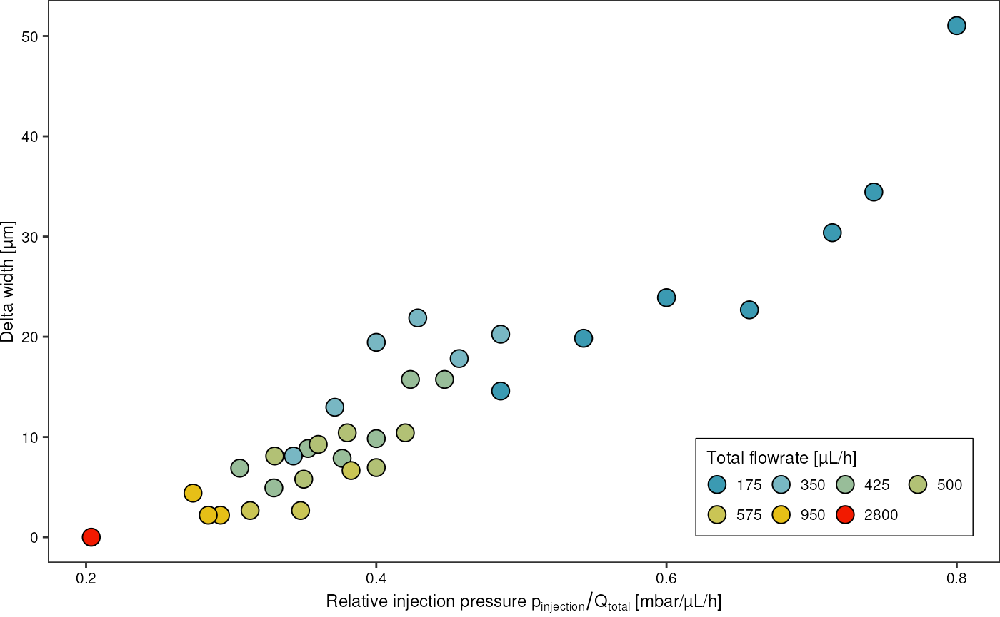
grDevices::pdf("lel.pdf", width=16.5*2, height = 11.7*2)
drops %>%
dplyr::select(c(-ac_v_pp, -ac_frequency, -n_droplets_on, -n_droplets_off, -n_false_droplets, -n_leaked_droplets, n_red_droplets_off, -delta_width, -width_green_injected, -width_green_noninjected, -file)) %>%
plot()
grDevices::dev.off()Use additional imaging data to correct the droplet sizes derived from PMT signals and flow rates
Read droplet sizes derived from image analysis and compare:
files <- list.files("data/fads/230126", pattern = "_kymograph_droplets.txt$", full.names = TRUE)
kymographDrops <- tibble::tibble()
for (f in files) {
kymographDrops <- kymographDrops %>%
dplyr::bind_rows(
readr::read_table(f, show_col_types = FALSE) %>%
dplyr::mutate("file" = stringr::str_extract(basename(f), "\\d{8}_\\d{6}")) %>%
# normalize intensity by droplet width
dplyr::mutate("intensity" = intensity/width)
)
}
# add metadata
kymographDrops <- kymographDrops %>%
dplyr::rename(c("video" = "file")) %>%
dplyr::left_join(
readr::read_table("data/fads/230126/metadata.txt", show_col_types = FALSE),
by = "video"
)
kymographDrops
#> # A tibble: 1,769 × 14
#> slice left right width intensity video file q_oil p_water q_emu…¹ ac_v_pp
#> <dbl> <dbl> <dbl> <dbl> <dbl> <chr> <chr> <dbl> <dbl> <dbl> <dbl>
#> 1 5 16.5 58.3 41.7 325. 202301… Sign… 150 125 25 5
#> 2 13 41.7 82.2 40.4 308. 202301… Sign… 150 125 25 5
#> 3 32 16.1 57.8 41.7 326. 202301… Sign… 150 125 25 5
#> 4 39 41.7 82.2 40.4 321. 202301… Sign… 150 125 25 5
#> 5 46 16.5 57.8 41.3 320. 202301… Sign… 150 125 25 5
#> 6 53 41.7 82.2 40.4 316. 202301… Sign… 150 125 25 5
#> 7 59 15.2 57.0 41.7 329. 202301… Sign… 150 125 25 5
#> 8 67 41.7 82.2 40.4 311. 202301… Sign… 150 125 25 5
#> 9 87 14.3 55.2 40.9 322. 202301… Sign… 150 125 25 5
#> 10 94 41.7 82.2 40.4 312. 202301… Sign… 150 125 25 5
#> # … with 1,759 more rows, 3 more variables: ac_frequency <dbl>, t_off <dbl>,
#> # laser_focus <dbl>, and abbreviated variable name ¹q_emulsionSummarize these into important statistics
diametersKymo <- kymographDrops %>%
dplyr::filter(!is.na(file)) %>%
dplyr::group_by(file, video, laser_focus) %>%
dplyr::summarise("diameter_mean" = mean(width),
"diameter_median" = median(width),
"diameter_sd" = sd(width),
"n_droplets" = dplyr::n(),
.groups = "drop")
widthNotInjected <- kymographDrops %>%
dplyr::filter(is.na(file)) %>%
dplyr::group_by(video) %>%
dplyr::summarise("diameter_mean" = mean(width)) %>%
dplyr::pull(diameter_mean) %>%
mean()Correlate the two droplet diameter measurements. I am translating the measured droplet diameter into the corresponding equivalent droplet length, when the droplet is squeezed in the channel (since that’s where the laser measures its length).
diametersBoth <- drops %>%
dplyr::select(c(file, width_green_injected_um)) %>%
dplyr::left_join(diametersKymo, by = "file") %>%
dplyr::filter(!is.na(diameter_median)) %>%
# convert measured diameter in equivalent squeezed droplet length
dplyr::mutate("equivalent_squeezed_length" = sapply(diameter_median, diameter_to_squeezed_length, 20, 30))
diametersBoth %>%
ggplot(aes(x = equivalent_squeezed_length, y = width_green_injected_um, color = as.factor(laser_focus))) +
geom_abline(slope = 1, intercept = 0) +
geom_point(aes(size = n_droplets)) +
theme_pretty_thesis()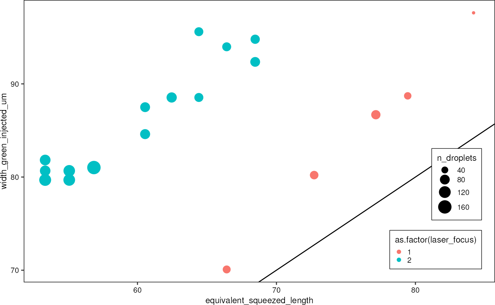 There seems to be a constant offset between droplet sizes measured from images, and those derived from the PMT signals. After the first five measurements, I had to adjust the chip position slightly, and therefore the laser focus was slightly different in subsequent acquisitions. Therefore, I will use two different width-correction values for the two groups.
The average offset is:
diametersBoth %>%
dplyr::group_by(laser_focus) %>%
dplyr::summarise("y_intercept" = mean(width_green_injected_um - 1* equivalent_squeezed_length))
#> # A tibble: 2 × 2
#> laser_focus y_intercept
#> <dbl> <dbl>
#> 1 1 8.68
#> 2 2 26.2That means, the signal peaks measured by the PMT tubes and as detected by the MATLAB code are on average 26.18 (or 8.68 in the first laser focus spot configuration) µm too wide. I will therefore subtract this value from the signal length, before computing the corresponding droplet volume.
dropsCorrected <- drops %>%
dplyr::select(c(-width_green_injected, -width_green_noninjected, -delta_width)) %>%
dplyr::mutate(dplyr::case_when(file %in% c("Signal_0", "Signal_1", "Signal_2", "Signal_3", "Signal_4") ~ dplyr::across(c(width_green_injected_um, width_green_noninjected_um), ~ .x -8.68),
.default = dplyr::across(c(width_green_injected_um, width_green_noninjected_um), ~ .x -26.19))) %>%
# convert squeezed width into sphere diameter
dplyr::mutate("diameter_injected" = sapply(width_green_injected_um, squeezed_length_to_diameter, 20, 30),
"diameter_noninjected" = sapply(width_green_noninjected_um, squeezed_length_to_diameter, 20, 30)) Actually, there is a second factor that need to be corrected for: When a droplet is being injected, the total flow rate in the channel increases, and therefore also the fluid velocity. This was not accounted for when calculating droplet velocities, and deriving spatial droplet sizes from that.
dropsCorrected %>%
ggplot(aes(x = p_water, y = diameter_noninjected)) +
geom_point()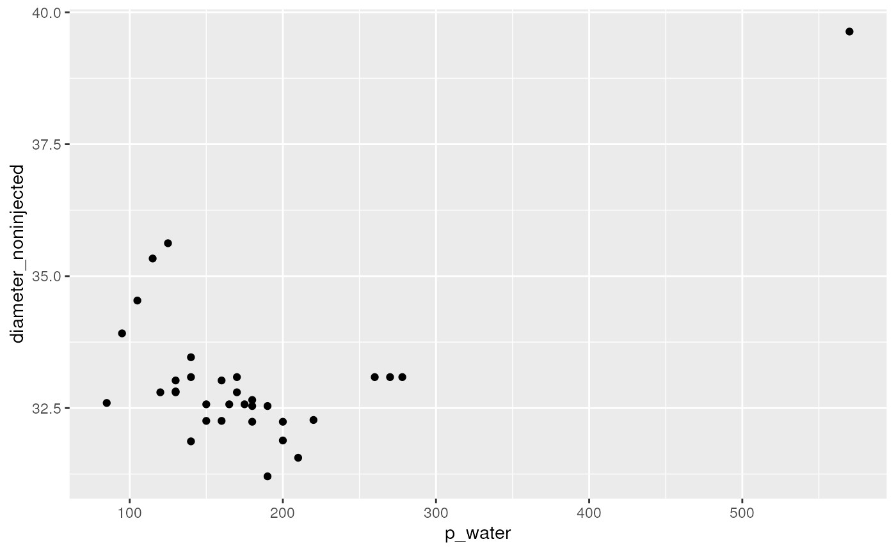
Since theoretically pressure contributes linearly to flowrate, which, in turn is directly proportional to the fluid velocity, I correct for the additional flow rate component by scaling the width accordingly
Investigate the difference in signal width between injected and non-injected droplets:
For which parameter combinations picoinjection was possible, in general?
Final plots
What do I wanna communicate with my plots:
- what injected volumes can be expected
- Injected volume consistency
- switchability
- flexibility in the injected volume
- how to operate the picoinjector, which operating regimes are there? (max throughput, max percentage of injected droplets, min percentage of false droplets, high consistency of injected volume)
Plot the distribution of width values, but only for
times were the AC field was switched on, i.e. droplets were being
picoinjected and therefore their width is supposed to increase with
increasing injection pressure.
Width distribution for every signal: